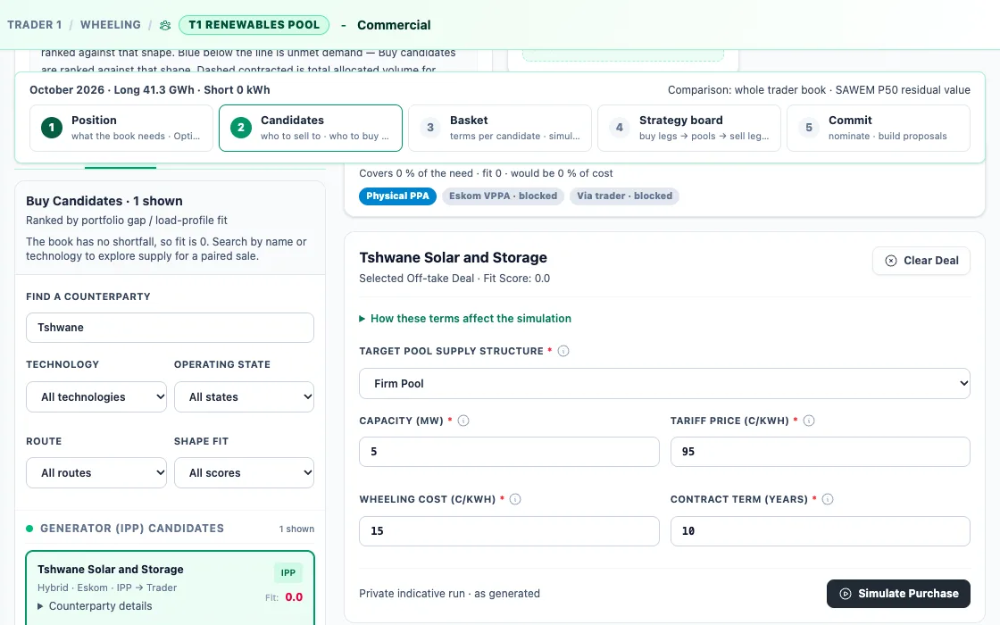
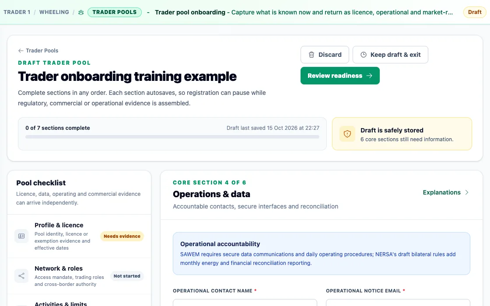
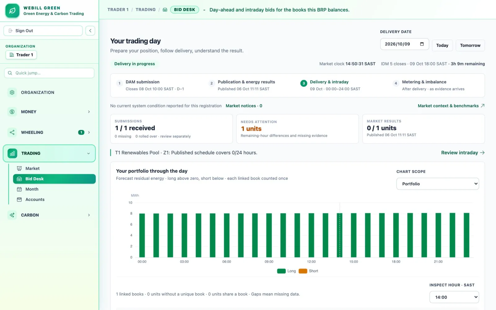

For licensed electricity traders
Buy from many, sell to many.
A trader owns no meter and carries both sides of a book. Webill Green runs your trader pools from licence file to monthly statement: who you buy from, who you sell to, the hours each side covers, and your margin hour by hour, under four-eyes risk controls.
The trader's market
Traders took 56% of the 4.7 GW financed between 2023 and 2025, and hold an 18 GW pipeline.
Every one of those megawatts is two contracts, a purchase and a sale, that have to settle against each other, hour by hour, across two networks and soon a wholesale market.
The right hours matter as much as the price.
Two curves with the same daily total can still leave a book long at noon and short at night. Pick a supply shape and see where the hours fail to meet.
- Daily demand, and daily supply
- Matched in the right hour
- Long
- Short
Illustrative profiles, each scaled to deliver exactly what the buyer uses in a day. The whole-day totals match every time; the hours do not.
One book, two connected needs.
The Desk sells the long and buys the short. Buy candidates are ranked against the book's gap and load shape; sell candidates against what the book has spare. A good trade improves the whole book, beyond its own price tag.

- 1PositionWhat the book needs, long and short, by hour
- 2CandidatesWho to sell to and who to buy from
- 3BasketTerms per candidate, each simulated
- 4Strategy boardBuy legs, pools and sell legs together
- 5CommitNominate, then build the proposals
A chain that reconciles itself.
A trader sits between contracts. On the 1st of every month, chain reconciliation checks that the volumes and the margin add up from the generator, through each trader, to the buyer.
- The IPPSells into the bookEnergy sent
- Your trader poolNo meter. Settles on nominationsSell − buy − wheeling
- The off-takerBuys on delivered energyEnergy delivered
Your margin, every hour
Sell, less buy, less wheeling, across about 8,760 hours a year. Pools can chain to other pools, trader to trader, and each link is its own contract with its own statement.
- Nominations are binding: settlement reads them where no meter can speak, and imbalance is judged against them
- Proposals for next month arrive on the 20th
- Batteries in the book are planned with the rest of it: dispatch is part of the strategy run
Four eyes on every lever that moves money.
Risk limits, the kill switch and the automation level change only through four-eyes approval. The engine computes and proposes; a person confirms. NERSA's draft trading-platform framework would bar automated trading for five years, so the desk defaults to human confirmation.
- Risk limits on exposure, with margin and value-at-risk fan charts beside them
- A kill switch for automated actions
- Onboarding that waits for evidence: licence, network roles, activities and limits

Bid the book's net position.
Your BRP seat bids the pool's net position into the day-ahead auction before 10:00 SAST the day before, corrects undelivered hours in five intraday auctions and answers for imbalance after delivery, all on a market clock in SAST.
Simulated until SAWEM opens

Run a pool on the demo world.
Or keep reading: how the market day works, gate by gate.